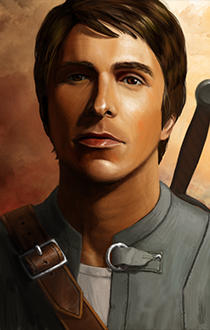
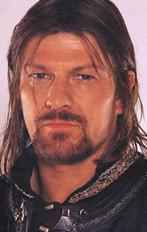
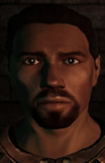
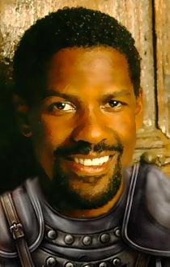
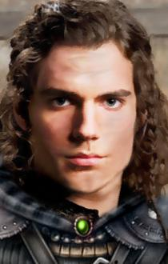
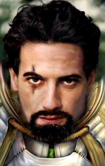
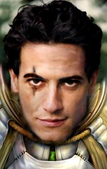
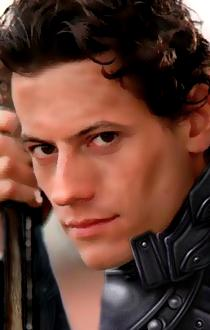
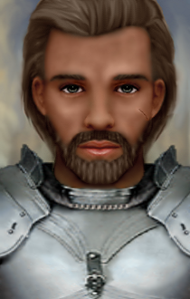

Aran Whitehand: Portrait Choices
| Portraits donated by various authors optionally installed. |
 Nix's "Default" portrait set (Choice 1) |
 Peachplum's "Latest" portrait (Choice 2) |
|
 berelinde's "Boromir" style (Choice 3) |
 berelinde's "Dragon Age" style (Choice 4) |
 berelinde's "Scruffy" style (Choice 5) |
|
 McMazey's "Don Pedro" style (Choice 6) |
 McMazey's "Fantasy Photo" style (Choice 7) |
 McMazey's "Bearded" style (Choice 8) |
|
 McMazey's "No Beard" style (Choice 9) |
 McMazey's "Horatio Photo" style (Choice 10) |
 Peachplums' "Young Fighter" style (Choice 11) |
|
piperb's "Stalwart Bearded Young" style (Choice 12) |
 piperb's "Mature Bearded" style (Choice 13) |
piperb's "Stalwart Young" style (Choice 14) |